Annual Virology Immunopath Retreat, 2016
Mukarram Hossain
Department of Veterinary Medicine
University of Cambridge
Works in 2015
Pipelign
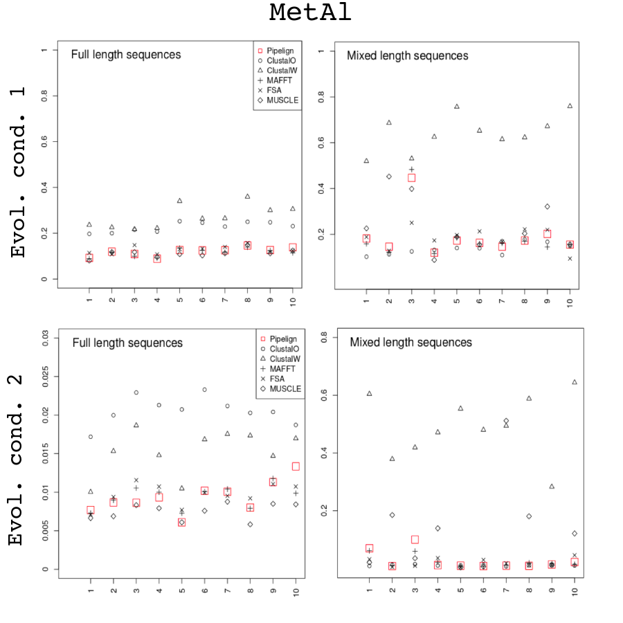
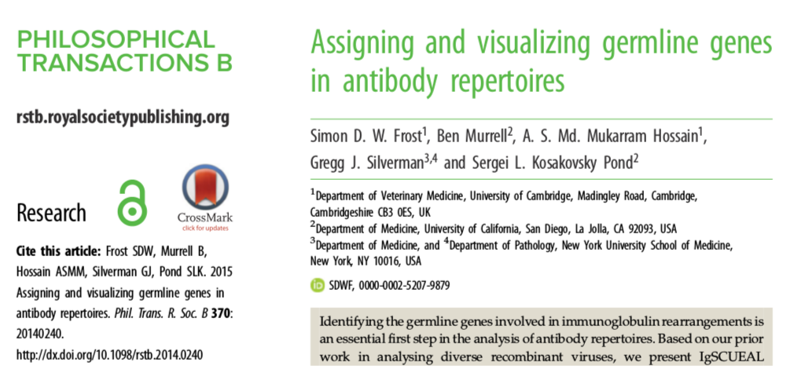
A phylodynamics pipeline
Viral phylodynamics
- How epidemiological, immunological, and evolutionary processes interact
- Potentially shape viral phylogenies
- Time-sampled viral phylogenies can reveal:
- Viral genetic variation
- Information of transmission dynamics
Viral phylodynamics
- Viral phylodynamics typically involve:
- Calculating evolutionary rates
- Dating viral origins
- Quantifying epidemic spread
- Assessing efficacy of viral control effect
- Estimating the demographic structure
- Estimating effective viral population size
Phylodynamic analysis
- Make use of serially sampled pathogen sequence data
- Time-stamped phylogeny is generated from temporal sequence data
- Phylodynamic studies often use sophisticated software packages such as
BEAST BEASTuses Bayesian phylogenetic analysis of molecular sequences- Uses Markov Chain Monte Carlo (MCMC) to obtain posterior estimates
- Provides a distribution of estimates for parameters of interest
MCMC - example
BEAST - issues
- MCMC is inherently slow to reach stationary distribution
- Computationally expensive for large datasets
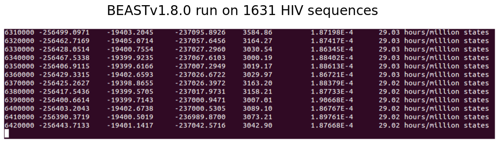
BEAST - issues
- Dataset may contain heterogeneous samples
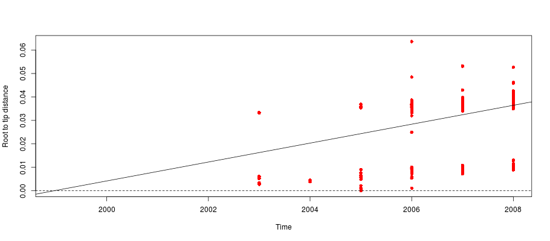
PhyloPipe
A phylodynamics pipeline
- We have developed a pipeline for phylodynamics studies
- Provides high throughput analysis of time sampled pathogen sequence data
- The pipeline makes use of published computational analysis tools
- Provides rough estimation of the following:
- Time-stamped phylogeny
- Evolutionary rates
- TMRCA
- Population dynamics
- Demographic structure
- and others...
- Can be used to guide initial conditions for
BEASTanalysis
PhyloPipe - workflow
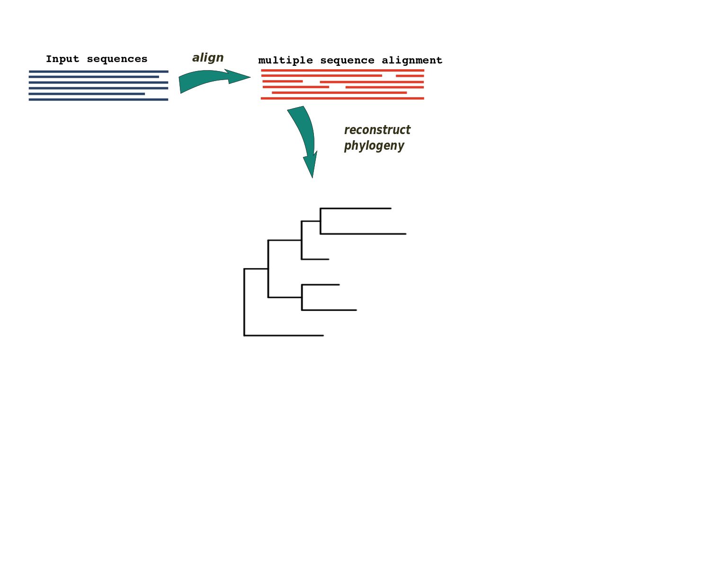
PhyloPipe - workflow
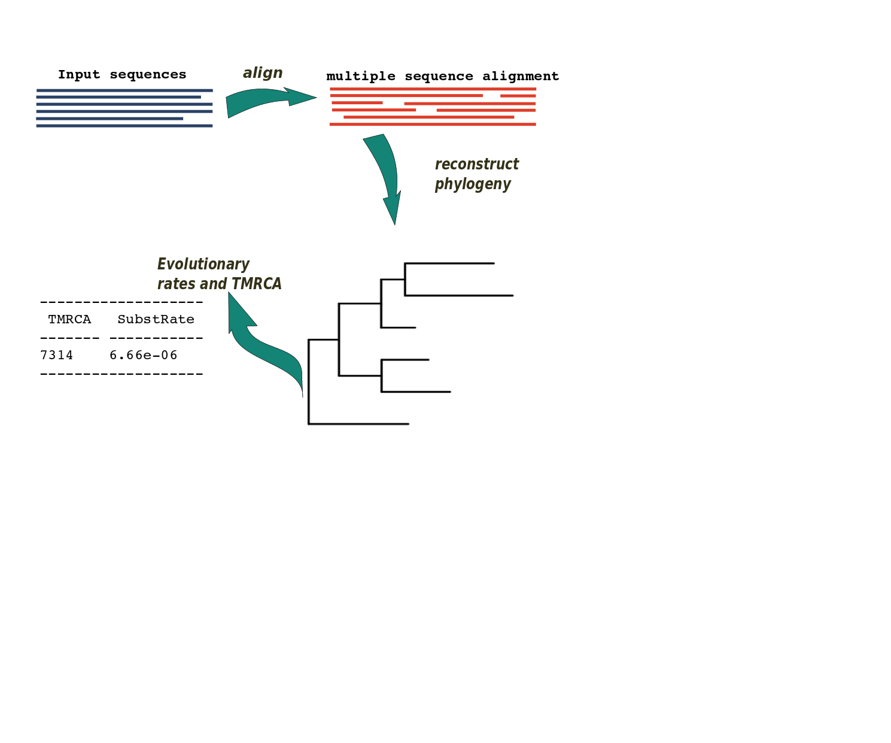
PhyloPipe - workflow
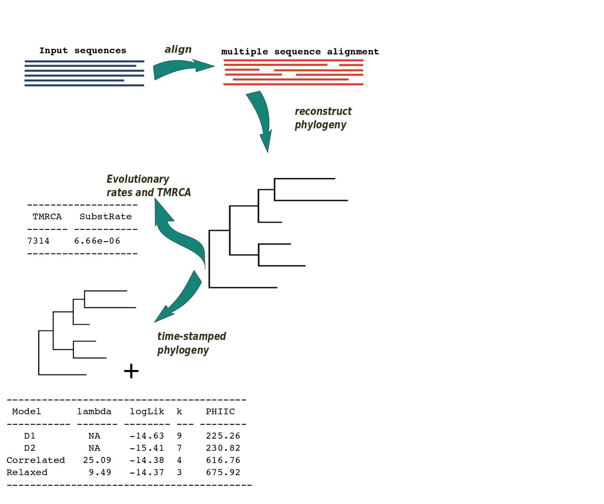
PhyloPipe - workflow
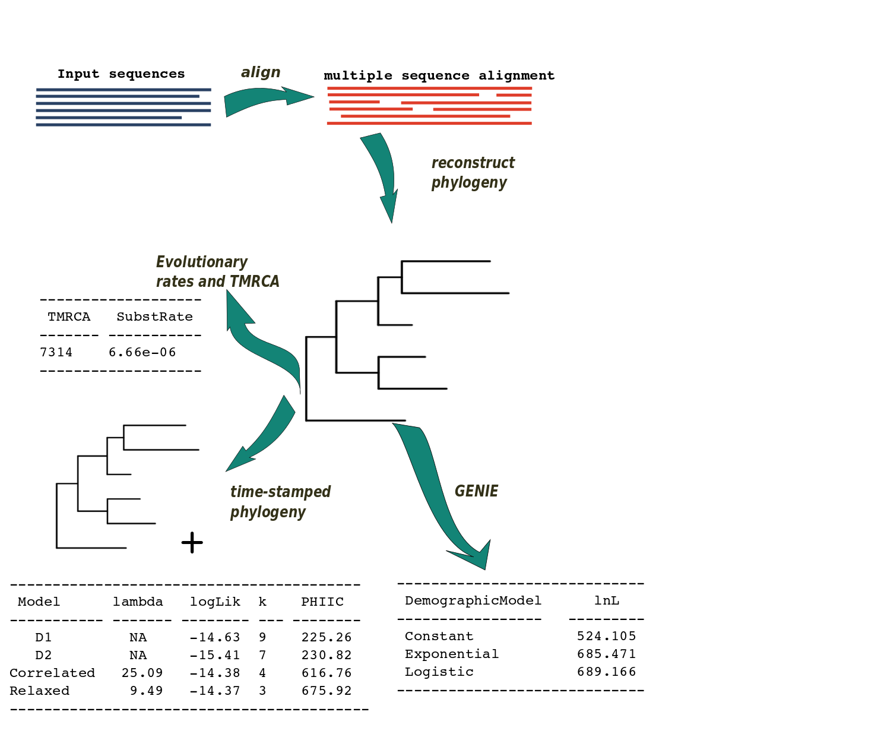
PhyloPipe - workflow
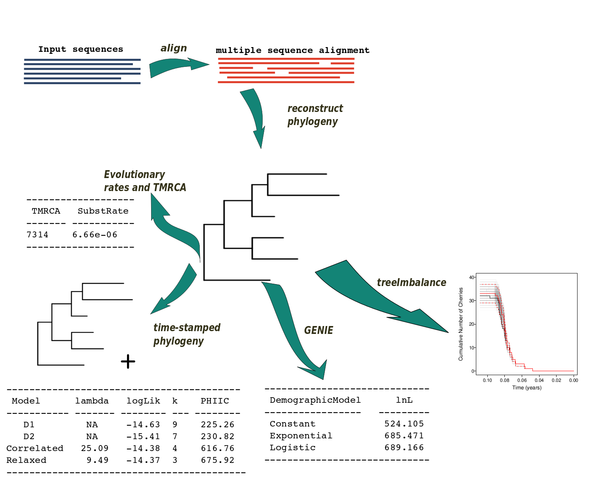
PhyloPipe - workflow
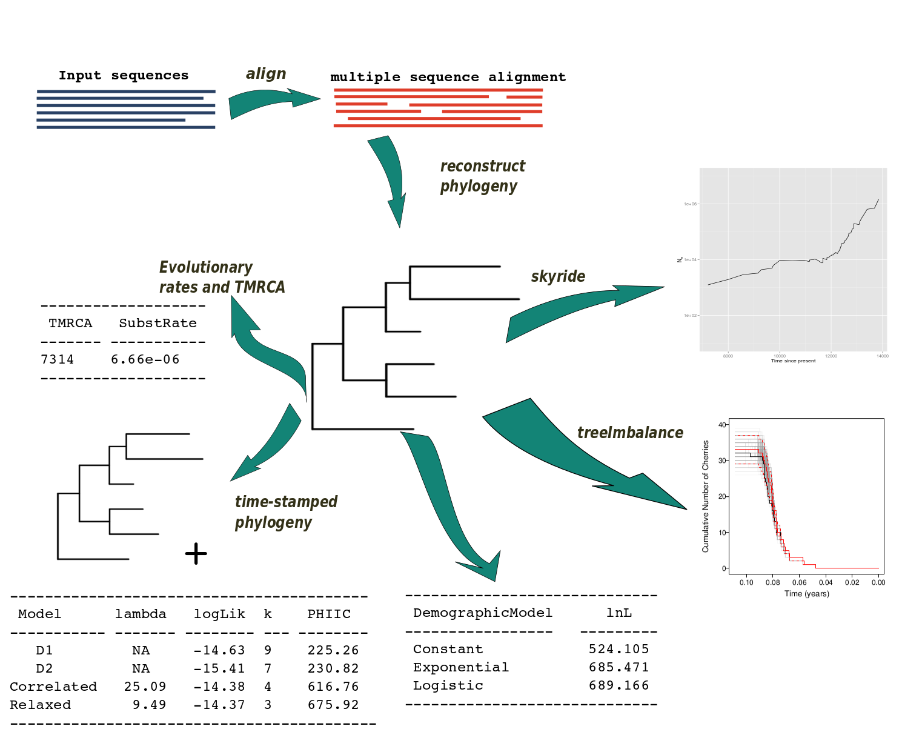
PhyloPipe Example
Dataset - DENV
- 805 DENV-1 WGS from Viet Nam collected between 2003-2008
- Aligned using
MUSCLE - Phylogeny constructed using
ExaML - Root-to-tip distance revealed clusters
- Subdivided into two smaller datasets
- G1 contains 140 sequences
- G2 contains 665 sequences
G1 - phylogeny
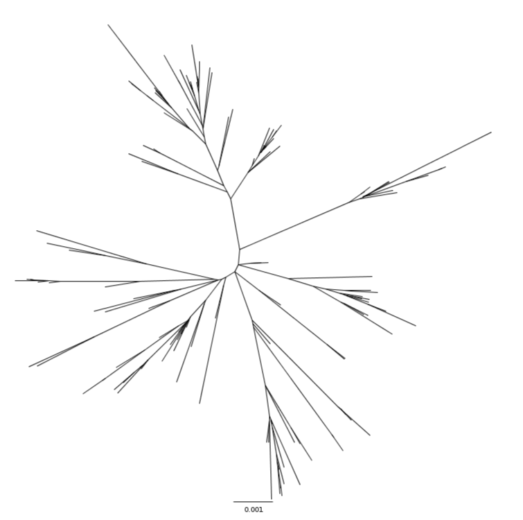
G1 - evolutionary rates and TMRCA
----------- ------------- ---------------
| | TMRCA | SubstRate |
|----------|-------------|--------------|
| RTT | 2001.364 | 9.8e-04 |
| TREBLE | 1993.886 | 6.1e-04 |
| LSD | 2000.984 | 7.8e-04 |
| BEAST | 2001.314 | 8.6e-04 |
----------- ------------- ---------------
G1 - Demographic model
-------------- --------------
| | lnL |
|-------------|-------------|
| Constant | 1244.72 |
| Exponential | 1254.89 |
| Logistic | 1265.07 |
-------------- --------------
G1 - skyride
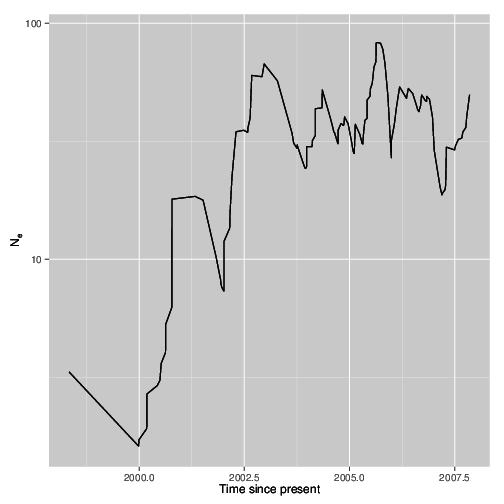
Skyride: Palacios and Minin (2012)
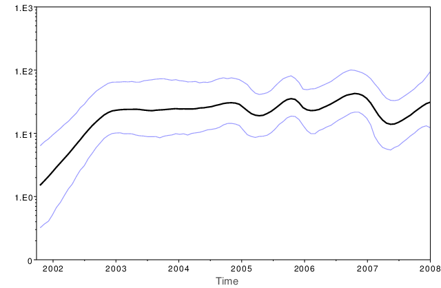
Skyride: Drummond, Suchard, Xie and Rambaut (2012)
Estimating initial conditions for MCMC
Future works
- Cluster analysis
- Discrete trait analysis
Acknowledgements
- Simon Frost
- Bethany Dearlove
- Fei Xiang
Thank you